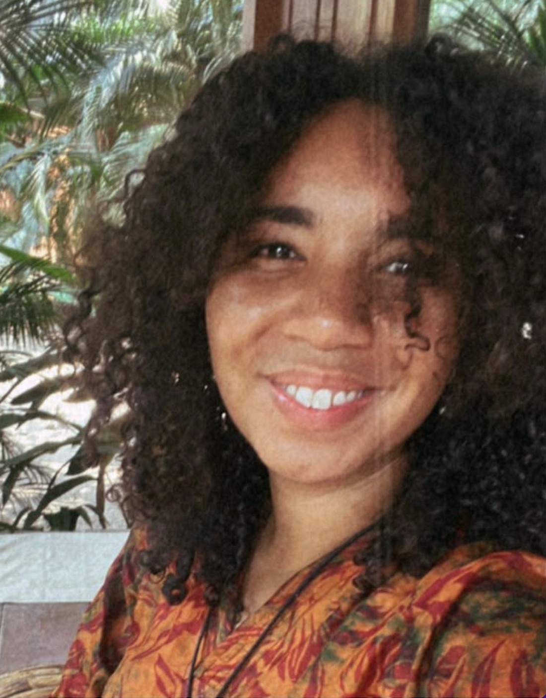

<div>

    
    <div class="text-left md:text-justify  ">
        <t-lang class="space-y-1 " en>
            <div>
                Hello beautiful!
            </div>
            <div>
                First of all, thank you for being here.
            </div>
            <div>
                What I will tell you here, is presented without filter, as a means to break the ice. I am Beatrice
                and I
                am a yoga teacher. I was born in Paris and I grew up between the city of light and the suburbs. All
                the
                time, my travelers spirit let me to live in different countries, including Estonia, the UK and the
                Netherlands.
            </div>
            <div>
                I discovered yoga at the age of twenty, a bit by accident, in a course offered by my faculty. This
                first
                course ignited my curiosity and gave me the envy to learn Sivananda Hatha and finally Vinyasa.
                However,
                it was not until a burn out and an initial trip to the south of India that my life completely
                changed: I
                stopped everything to start over in Amsterdam.
            </div>
            <div>
                Once there, I took the time to get out of the bad feeling that had turned into a depression. Several
                things have contributed to my healing: psychotherapy, support from my loved ones and Yin Yoga that I
                discovered during this period of convalescence.
            </div>
            <div>
                After multiple months of practicing Yin, I enrolled in a teacher training with the idea to increase
                my
                knowledge. This soft and profoundly therapeutic yoga allowed me to reconnect with myself and with my
                emotions. Naturally, I felt the need to share this journey with all of those who feel stuck in their
                daily lives.
            </div>
            <div>
                For more than 3 years, I have accompanied my students physically and emotionally through courses
                focused
                on anchoring, reconnecting with the breath, the body, the emotions, letting go and self-acceptance.
                The
                practice of meditation being a strong component of my teaching.
            </div>
            <div>
                I teach not only the soft yoga called "Yin" , such as Yin Yoga, Yoga Nidra and Restorative...
            </div>
            <div>
                but also the yoga called "Yang" which is more dynamic such as Hatha Yoga.
            </div>
            <div>
                My lessons are warm and inclusive: Every person is welcome, no matter your gender, age, origins,
                beliefs, morphology, flexibility or knowledge of Yoga.
            </div>
            <div>
                Beginner? I will be delighted to introduce you to this amazing discipline.
            </div>
            <div>
                So, see you soon on the mat?
            </div>
        </t-lang>
        <t-lang class="space-y-1 " fr>
            <div class="whitespace-pre-line ">
                Bonjour et bienvenue !

                Je suis Beatrice MBUAKI, fondatrice de Bea Preeya, un espace dédié à la pratique de la méditation et du yoga doux. 


                Sensible depuis toujours à la spiritualité, je découvre le yoga à l'âge de 20 ans via un cours proposé par mon université.
                Bien que ce premier cours éveille ma curiosité, je ne ressens pas le besoin de pratiquer assidûment, trop occupée par ma vie d'étudiante. 

                Toutefois, dix ans plus tard, à la suite d'un épisode de vie douloureux, ma vie bascule. 
                Prise aux mains d'un burn-out sévère, tout s'effondre autour de moi. Mon salut arrive sous la forme d'un voyage initiatique en Inde.
                J'en reviens bouleversée. Je quitte la France, mon job et mes proches pour me reconstruire à l'étranger. 

                Une fois sur place, ce temps d'introspection forcé me permet de découvrir le Yin Yoga que je pratique dès lors régulièrement. 
                A la fois doux, stimulant et thérapeutique, il me reconnecte à mes sens et surtout mes émotions. 

                C'est donc naturellement que je m'inscris à une formation de professeur de yoga, avec l'idée de développer mes connaissances. 
                Cependant, le destin en décide autrement et l'opportunité d'enseigner se présente à mi-parcours de la formation, j'y prends un plaisir fou. 
                C'est ainsi que mon aventure débute et que Bea Preeya voit le jour. Preeya étant le nom qui m'ait été attribué lors de mes voyages en Inde. 
                Il signifie en sanskrit : "celle qui apporte le bonheur" soit la même signification que mon prénom latin : un signe du destin. 

                Depuis 2019, j'enseigne avec passion et bienveillance, la pratique de la méditation, du Yin et du Hatha Yoga. 

                Mes cours sont axés sur l'ancrage, le souffle, le lâcher-prise, l'acceptation et la reconnection aux émotions. 
                A la fois chaleureux et inclusifs, ces sessions sont un moment de partage et de communion. 
                Toute personne est bienvenue, peu importe son expérience, parcours, sexe, âge, morphologie, origines et croyances. 

                Débutant(e) ? Je serai ravie de t’initier à cette pratique millénaire et ô combien transformatrice, que ce soit lors d'un cours collectif ou privé. 
                Pour en savoir plus, n'hésites pas à me contacter et à t'inscrire à la newsletter. 

                Tu es à un clic de positivement changer ta vie ♡ 

                --
                Beatrice MBUAKI
            </div>
        </t-lang>
    </div>


</div>
